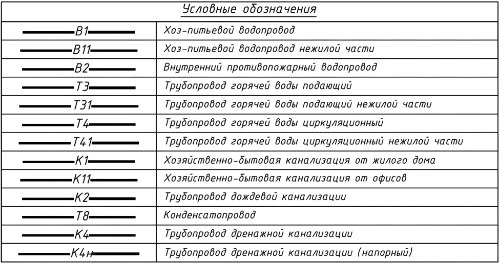
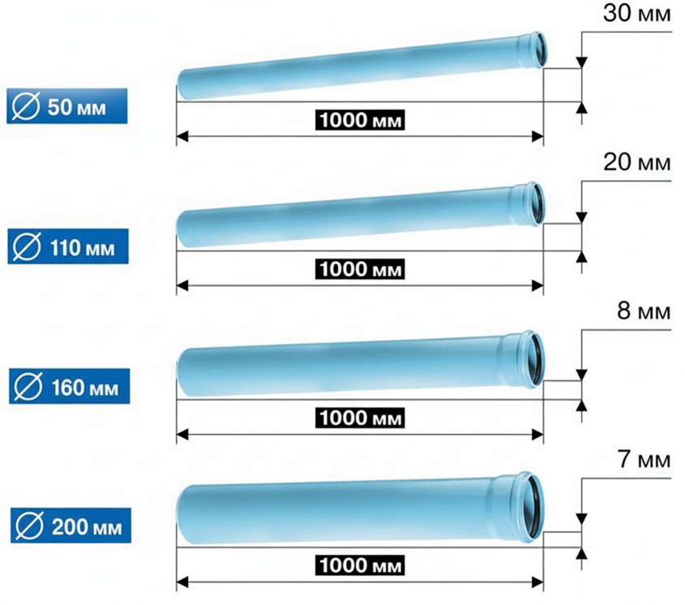

Основные принципы проектирования ВК (СП 30.13330.2020)

Коллеги, запомните: ваша задача – не просто начертить линии на плане, а обеспечить комфорт и безопасность.
Система ВК (Водоснабжения и Канализации) работает по трем законам, которые можно изложить простым языком:
- Обеспечить подачу воды ко всем потребителям с требуемыми параметрами
- Организовать беспроблемный отвод сточных вод
- Гарантировать безотказность и безопасность системы на весь срок эксплуатации
Все требования СП 30.13330.2020 подчинены этим законам. Давайте разберем их «на пальцах» и на пунктах норм.
Проектирование – это не заучивание пунктов, а понимание физики процессов.
Водоснабжение (В1, Т3, Т4): Давление, Расход, Кольцо
Разберемся для начала в обозначениях. В1 – холодное водоснабжение, Т3 – горячее водоснабжение, Т4 – циркуляция, это тоже горячее водоснабжение, но которое находится постоянно в движении, чтобы в момент открытия крана обеспечивать потребителей горячей водой. Также подробнее с некоторыми другими образующими обозначениями Вы можете ознакомиться на картинке:

Какие бывают схемы холодного водоснабжения
1. Обеспечение требуемого напора
Необходимо подобрать оборудование и диаметры труб так, чтобы в самой удаленной и высоко расположенной точке водоразбора был обеспечен минимально необходимый свободный напор, при этом давление у самого низкого прибора не превышало предельно допустимого.
- Максимальное давление (п. 8.22): Гидростатическое давление в системе на отметке самого низкорасположенного прибора не должно превышать: 0.45 МПа (45 м. водного столба) - для всех зданий.
- При большем напоре необходимо ставить регуляторы давления, снижающие его. Обычно в квартирах их ставят после счетчика.
- А на отметке наиболее высоко расположенного санитарного прибора в зоне системы водоснабжения следует принимать не менее 20,0 м вод. ст. (0,2 МПа) (п. 8.21)
- Если здание высокое (54 метров), одной зоной не обойтись. Вы обязаны делить систему на зоны (Например, зона 1: 1-12 этаж, Зона 2: 13-24 этаж). Иначе на первых этажах у людей выбьет краны.
2. Организация циркуляции в системе ГВС (Т4)
Вы открываете горячий кран. Ждете 5 секунд... 30 секунд... вода холодная. Почему? Потому что нет циркуляции – Т4. Горячая вода должна постоянно двигаться по кругу (Т3 → Т4), чтобы быть горячей при открытии крана.
- Циркуляционный контур: Система ГВС должна быть замкнутой. Циркуляционный трубопровод (Т4) прокладывается параллельно подающему (Т3).
- Подключение полотенцесушителей: Согласно п. 9.8 СП, присоединение полотенцесушителей следует предусматривать, как правило, к подающим трубопроводам (Т3). Подключение к циркуляционному трубопроводу (Т4) требует дополнительного обоснования и проверки гидравлики.
Подключение водоразборных приборов к циркуляционным стоякам и циркуляционным трубопроводам не допускается!
3. Выбор материалов трубопроводов
Вода должна быть питьевой. Это значит, что мы не можем использовать черные стальные трубы без внутреннего и наружного антикоррозионного покрытия (риск ускоренной коррозии, п. 18.7).
- Материалы для трубопроводов должны соответствовать требованиям Единых санитарно-эпидемиологические и гигиенические требования к продукции (товарам), подлежащей санитарно-эпидемиологическому надзору (контролю).
- Трубы и соединительные детали для безнапорных и напорных систем бытовых сточных вод следует принимать из полимерных материалов, нержавеющей стали, чугунные, стальные с антикоррозионным внутренним и наружным покрытием на бессварных соединительных муфтах.
- Внутренние водостоки следует делать только из напорных трубы (в зданиях высотой до 10 метров разрешается делать водосток из безнапорных труб):
-из полимерных материалов;
-чугунные, в том числе безраструбные;
-стальные, имеющие внутреннее и наружное антикоррозионное покрытие на бессварных соединительных муфтах.
Материалы должны иметь документы, подтверждающие пригодность для контакта с питьевой водой.
Канализация (К1): Самотек, Вентиляция, Засоры
Канализация – это безнапорная система. Она работает за счет гравитации и должна обеспечить самотечное движение сточных вод со скоростью, предотвращающей выпадение взвешенных веществ и заиливание.
1. Принцип «Правильного уклона»
Самое главное заблуждение: «Чем больше уклон, тем лучше, быстрее стечет». Неверно. Вода должна нести твердые частицы.
- Слишком маленький уклон = вода стоит, осадок выпадает → Засор.
- Слишком большой уклон = вода улетает, бумага остается сухой → Засор.

- Железобетонное правило (п. 18.2 + расчет):
-Для водопровода следует принимать не менее 0,002 (п. 11.19)
2. Принцип «Дыхания системы» (Вентиляция стояков)
Когда вы смываете унитаз, летит «водяная пробка». За ней создается вакуум. Если нет притока воздуха с крыши, этот вакуум высосет воду из сифонов соседей. Привет, запах канализации в квартире. Необходимо предотвратить разрежение в системе при сбросе сточных вод, которое приводит к срыву гидрозатворов санитарных приборов и проникновению запахов в помещения.
- Правило СП (п. 18.18): Вытяжная часть стояка выводится на кровлю.
- 0,2 м от плоской неэксплуатируемой и скатной кровли;
- 0,1 м от обреза сборной вентиляционной шахты;
- не менее 3,0 м от плоской эксплуатируемой кровли при обязательном выполнении требований 18.22.
- Объединение вентилируемых стояков (группы стояков) трубопроводов, транспортирующих жиросодержащие стоки, с вентилируемыми стояками (группой стояков), предназначенных для вентиляции канализационных трубопроводов другого назначения (например, бытовых), не допускается. Никогда. Иначе весь дом будет пахнуть, как общественный туалет.
- Трубопроводы внутренних систем бытовых и производственных сточных вод (канализации) прокладывать в шахтах с воздуховодами систем вентиляции, внутри воздуховодов, а также снаружи на расстоянии менее 100 мм от них не допускается. Пересечение воздуховодов трубопроводами бытовой и производственной канализации не допускается.
3. Принцип «Ревизии и Прочистки»
Засоры будут. Это практически неизбежно. Проектировщик должен думать о сантехнике, который придет с тросом.
Правило СП (п. 18.26): Ревизии и прочистки на сетях бытовой и производственной канализации ставятся:
- На первом и последнем этажах.
- В жилых домах и общественных зданиях – не реже, чем через каждые 3 этажа.
- На поворотах магистралей
- В начале участков отводных трубопроводов при числе присоединяемых приборов три и более, если под ними нет устройств для прочистки
- в проходных туннелях.
При длине подвесных горизонтальных линий до 24 м прочистку в начале участка допускается не предусматривать.
Также при прокладке стояков внутренних водостоков ревизии необходимо устанавливать в нижнем этаже зданий и далее с шагом 40 м, а при наличии отступов – над ними (п. 21.15 СП)
Наибольшие допускаемые расстояния между ревизиями или прочистками следует принимать согласно таблице 18.1 СП.
| Диаметр трубопровода, мм | Расстояние, м, между ревизиями и прочистками в зависимости от вида сточных вод | Вид устройства для проведения прочистки | ||
| Производственные незагрязненные и водостоки | Бытовые и производственные, близкие к ним | Производственные, содержащие большое количество взвешенных веществ | ||
| 50 | 15 | 12 | 10 | Ревизия |
| 50 | 10 | 8 | 6 | Прочистка |
| 100 - 150 | 20 | 15 | 12 | Ревизия |
| 100 - 150 | 15 | 10 | 8 | Прочистка |
| 200 и более | 25 | 20 | 15 | Ревизия |
Требования к размещению и прокладке трубопроводов
Самые дорогие ошибки – это прокладка труб там, где нельзя.
При пересечении трубопроводом противопожарной преграды следует предусматривать теплоизоляционные конструкции из негорючих материалов в пределах размера противопожарной преграды. (п. 26.12)
Табу проектировщика ВК (на основе СП 30) нельзя прокладывать под потолком, у стен, в стенах и в полу (п. 18.11):
- Над жилыми комнатами. Во-первых, канализация очень сильно шумит. Во-вторых, в случае аварии.
- спальных помещений дошкольных образовательных организаций,
- гостиниц,
- больничных палат,
- врачебных кабинетов,
- обеденных залов,
- рабочих комнат персонала общественных,
- административных и производственных зданий,
- залов заседаний,
- зрительных залов,
- библиотек,
- учебных аудиторий,
- электрощитовых и трансформаторных,
- пультов управления автоматики и производственных помещений, требующих особого санитарного режима. Вода + Электричество = Пожар.
Также не допускается прокладка внутренней канализации под потолком помещений:
- предприятий общественного питания,
- кухонь,
- торговых залов,
- складов пищевых продуктов и ценных товаров,
- вестибюлей, помещений, имеющих ценное художественное оформление,
- производственных помещений в местах установки производственных печей, на которые не допускается попадание влаги,
- помещений, где производятся ценные товары и материалы, качество которых снижается от попадания на них влаги.
Основы гидравлического расчета
Многие делают «как в прошлом проекте», но необходим обоснованный подбор диаметров трубопроводов и определение потерь напора для корректного выбора насосного оборудования.
Вероятностный метод (СП 30.13330.2020, Приложение А):
Расход в сети рассчитывается не путем простого суммирования расхода всех приборов, а с учетом вероятности их одновременного использования. Чем больше приборов в здании, тем меньше коэффициент одновременности (определяется по приложению Б.1 СП).
Формула: q = 5*q0 * a. (Максимальный расчетный расход воды на расчетном участке сети),
где q - расчетный секундный расход воды,
q0 - секундный расход водоразборной арматурой,
α - коэффициент, определяемый по числу приборов N и вероятности их действия P.
Скорости движения воды:
- Для горячей и холодной воды допустимая скорость движения в трубопроводе зависит от шума и приведена в приложении И СП 30.13330.2020.
- средняя скорость движения стоков должна быть не менее 0,7 м/с (самоочищающая), а наполнение трубопроводов - не менее 0,3).
- Пропускная способность канализационных стояков из разных материалов приведена в приложении К СП 30.13330.2020.